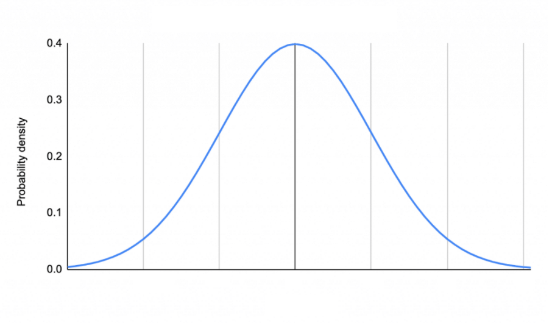

# Calculate the probability of being to the left of quantile -1
pnorm(q = -1, mean = 0, sd = 1)Distributions
Section 9.1
The Standard Normal Distribution
Properties
- The area under the curve is 1 (or 100%)
- The mean of the distribution is 0
- The standard deviation of the distribution is 1
Empirical Rule
- Around 68% of values are within one standard deviation from the mean.
- Around 95% of values are within two standard deviations from the mean.
- Around 99.7% of values are within three standard deviations from the mean.
Why is this useful? If we know the mean and standard deviation of a variable that follows the normal distribution, we can calculate the probability of an event occurring.
How is this applicable? We can transform any normally distributed variable into a standard normal distribution with standardization.
\[\hbox{STAT} = \frac{X - mean(X)}{sd(X)}\]
The Normal Distribution
- Changing \(\mu\) (mu, the mean), changes where the center (peak) of the distribution is located.
- Changing \(\sigma\) (sigma, the standard deviation), changes the spread of the distribution.
- The shape of the distribution never changes. It is always unimodal and symmetric (no skew).
The T-Distribution
The t-distribution is similar in shape to a normal distribution.
- Completely characterized by it’s degrees of freedom (df). A parameter defined based on the sample size \(n\).
- As we make the degrees of freedom (\(df\)) larger the t-distribution is getting closer to the standard normal distribution.
- The normal distribution assumes that you know the population standard deviation, \(\sigma\). The t-distribution is used if you only know the sample standard deviation, \(s\) (ie: \(\sigma\) unknown).
Normal Distribution in R
pnorm() calculates the probability to the left of a quantile
qnorm() calculates the quantile with p% of data to the left
# Calculate the quantile, with 20% of data to the left
# default is mean = 0 and sd = 1
qnorm(p = .2)Setting lower.tail = FALSE calculates/uses area to the right
# lower.tail = FALSE changes it to data/area to the right
# specify mean and sd if you are not using a standard normal distribution
qnorm(p = .025, mean = 10, sd = 2, lower.tail = FALSE)Example 1
For a standard normal distribution, what is the probability of being less than one standard deviation below the mean?
pnorm(q = -1)[1] 0.1586553Example 2
For a standard normal distribution, find the STAT (CV) for being in the highest 30%.
qnorm(p = 0.3, lower.tail = FALSE)[1] 0.5244005# OR
qnorm(p = 0.7)[1] 0.5244005Example 3

The amount of money spent buying weekly groceries follows a normal distribution. We are lucky enough to know the population mean is $150 and the population standard deviation is $20. Find the probability an individual spent less than $120.

# Standardize
pnorm(q = 120, mean = 150, sd = 20)[1] 0.0668072# Standardize
pnorm(q = -1.5)[1] 0.0668072
You can transform any normally distributed variable onto a standardized scale.
T-distribution in R
VERY similar to normal distribution but…
pt() calculates the probability to the left of a quantile for a t-distribution
qt() calculates the quantile with p% of data to the left for a t-distribution
# no mean and sd! Now we use df
# these examples are using 9 degrees or freedom
pt(q = -1, df = 9)
qt(p = .025, df = 9)
qt(p = .025, df = 9, lower.tail = FALSE)